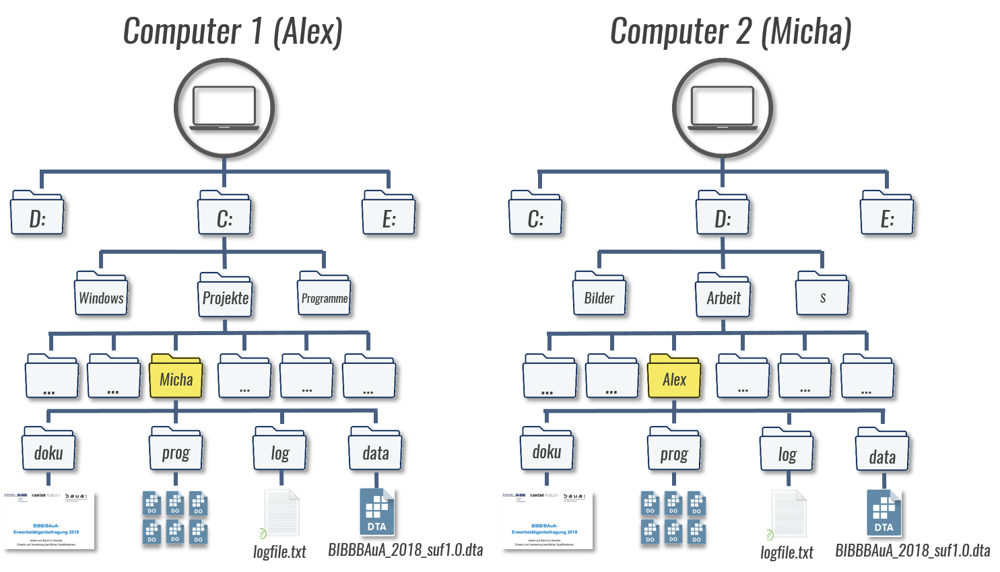
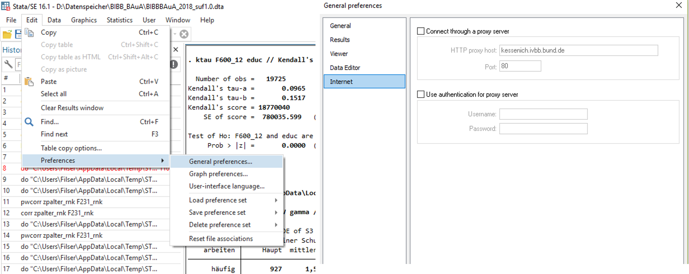

1 Macros
Macros ist die Sammelbezeichung für globals und locals in Stata. Beide dienen zur (vorläufigen) Speicherung von Text- oder Zahleninformationen. Definiert werden sie durch globalinhalt oder localinhalt - oft mit glo und loc als Abkürzungen. globals können dann mit $globalname/${globalname} aufgerufen werden, locals mit `localname' - ganz einfach bspw. mit dis[play]:
glo x = 1
loc y = 2
dis ${x}
dis `y'1
2…oder mit macro list, hier sind die macros aber ohne “punctuation” (also $ oder `')
glo x = 1
loc y = 2
mac list x
mac list _yx: 1
_y: 2Der Unterschied besteht vor allem darin, dass local macros ‘lokal’ für ein spezifisches Programm verfügbar sind, globale macros hingegen für alle Programme (innerhalb einer Stata-Session) verfügbar sind. Letztlich können wir jede Instanz, in der wir mehrere Zeilen eines DoFiles ausführen als ‘Programm’ ansehen.
globals können wir später nochmal aufrufen, locals nicht:
mac list xgxg: 1mac list _xlr(111);
end of do-file
r(111);1.1 = macht einen Unterschied
In der Regel können wir auch einfach glo glname Wert bzw. loc locname Wert statt glo glname = Wert bzw. loc locname = Wert angeben. Allerdings ist hier etwas Vorsicht geboten, denn das = ist entscheidend ob die Rechnung abgelegt wird oder das Ergebnis (Stichwort evaluation):
Mit
=: der Ausdruck wird “evaluated”Ohne
=: der Ausdruck wird “aliased”
Im Ergebnis sehen wir hier beides Mal das gleiche:
local m1 2+2
display `m1'4local m2 = 2+2
display `m2'4Aber wenn wir uns mit mac list die abgelegten Infos ansehen, dann sehen wir den entscheidenden Unterschied:
mac list _m1 _m2_m1: 2+2
_m2: 4Wenn wir nämlich mit m1 und m2 weiterrechnen, da kann folgendes passieren:
local m1 2+2
display `m1'*410local m2 = 2+2
display `m2'*416Denn \(2+2*4\neq4*4\)
1.2 local und global sind getrennte Welten
Geht, aber ist nicht zu empfehlen:
glo yx = 1
loc yx = 2
mac list yx
mac list _yxyx: 1
_yx: 21.3 Macros mit Text
Wir können macros zu Texten zusammenbauen:
glo t1 "Hallo"
glo t2 " zusammen"
glo t3 "! :-)"
glo t4 = "${t1}${t2}${t3}"
dis "${t4}"
mac list t1 t2 t3 t4Hallo zusammen! :-)
t1: Hallo
t2: zusammen
t3: ! :-)
t4: Hallo zusammen! :-)1.4 Dateipfade
Ein macro kann auch Text enthalten und wir können diesen bspw. für Dateipfade macros verwenden:
glo pfad "D:\Projekt\daten\BIBB_BAuA" // wo liegt der Datensatz?
use "${pfad}/BIBBBAuA_2018_suf1.0.dta", clear // laden des Datensatzes Wir können das auch nutzen, um DoFiles in Kooperationsprojekten zu bauen, wenn verschiedenen Personen die DoFiles verwenden:

glo pfad "C:\Projekte\Micha" // wo liegt der Datensatz bei Alex?
glo pfad "D:\Arbeit\Alex" // wo liegt der Datensatz bei Micha?
glo prog "${pfad}/prog"
glo data "${pfad}/data"
glo log "${pfad}/log"Micha würde dann immer den Pfad von Alex überspringen/auskommentieren und umgekehrt. Wir lernen gleich noch eine Möglichkeit kennen, das auch direkt mit zu lösen mit dem Usernamen der verwendeten PCs.
use "${data}/BIBBBAuA_2018_suf1.0.dta", clear // laden des Datensatzes Die " " sind nicht zwingend nötig in diesem Fall. Sollten aber Leerzeichen im Pfad vorkommen, brauchen wir auf jeden Fall " ". Außerdem ist \ beim Zusammenbauen mit macros manchmal problematisch) - auch hier helfen " ". Alternativ hilft hier / statt \ zu verwenden.
Mit mkdir können wir auch Ordner erstellen. Wenn also noch kein log-Ordner existiert, können wir ihn so erstellen:
mkdir ${log}Mit cap cd können wir das vorher überprüfen:
capture cd "${log}"
if _rc!=0 {
mkdir ${log}
display "${log} erstellt"
} Siehe 01_init_beispiel.do für ein Beispiel für einige Befehle beim Erstellen eines Projektverzeichnisses.
1.5 Bereits definierte Macros
Mit mac list bekommen wir auch einige von Stata bereits vorgegebenen Macros angezeigt.
mac listZwei sehr nützliche sind dabei $S_DATE $S_TIME - das aktuelle Datum und die aktuelle Zeit:
dis "$S_DATE"
dis "$S_TIME"2 May 2022
12:44:22Diese können wir beispielsweise am Anfang und Ende eines Abschnitts in einem LogFiles einblenden, um Start- und Endzeit zu dokumentieren:
log using "${log}/logfile.txt", t replace
use ....
dis "Start: $S_DATE um $S_TIME"
.
.
Hier kommen aufwändige Modelle
.
.
.
dis "Ende: $S_DATE um $S_TIME"
.
.
.
cap log closeSo können wir beispielsweise automatisch log-Files mit einem Datum versehen:
global date = string( d($S_DATE), "%tdCY-N-D" )
* help datetime_display_formats // für andere Datumsformate
cap log close
log using "${log}/01_macro_loops_${date}.log", replace text. log using "${log}/01_macro_loops_${date}.log", replace text
(note: file D:\Arbeit\Alex/log/01_macro_loops_2021-12-01.log not found)
--------------------------------------------------------------------------------------------------------------------------------------------------------------------------------
name: <unnamed>
log: D:\Arbeit\Alex/log/01_macro_loops_2021-12-01.log
log type: text
opened on: 01 Dec 2021, 10:45:04Außerdem gibt es einige locals mit nützlichen Infos:
dis "`c(username)'"
dis "`c(machine_type)'"
dis "`c(os)'"Filser
PC (64-bit x86-64)
WindowsWeitere “system parameters and settings” unter help creturn bspw.:
c(changed)returns a numeric scalar equal to 0 if the dataset in memory has not changed since it was last saved and 1 otherwise.c(filename)returns a string containing the filename last specified with a use or save, such as"C:\Data\auto.dta".c(filedate)returns a string containing the date and time the file inc(filename)was last saved, such as “7 Jul 2016 13:51”.
1.5.1 if
Mit if (local== "...") können wir macros abgleichen, um Befehle nur unter bestimmten Bedingungen auszuführen:
if ("`c(username)'" == "Filser") display "Du bist Filser"
if ("`c(username)'" != "Fischer") display "Du bist nicht Fischer"Das können wir für den Fall von eben mit mehreren Nutzern nutzen:
if ("`c(username)'" == "Alex") glo pfad "C:\Projekte\Micha" // wo liegt der Datensatz bei Alex?
if ("`c(username)'" == "Micha") glo pfad "D:\Arbeit\Alex" // wo liegt der Datensatz bei Micha?
glo prog "${pfad}/prog"
glo data "${pfad}/data"
glo log "${pfad}/log"
use "${pfad}/BIBBBAuA_2018_suf1.0.dta", clear // laden des Datensatzes Für if-Bedingungen stehen uns die üblichen Operatoren zur Verfügung, die wir auch aus den if-Statements in Befehlen kennen: >, <, ==, >=, <=, !=/~= (ungleich) Mit | können wir oder-Bedingungen stellen.
inrange: einen Wertebereich auswählen
loc x = 20
if `x' >= 20 & `x' <= 30 display "& yes"
if inrange(`x',20,30) display "inrange yes"loc x = 19
if inrange(`x',20,30) display "yes"inlist: spezifische Werte angeben, um lange Folgen von|zu vermeiden:
loc x = 20
if `x' == 18 | `x' == 20 | `x' == 22 | `x' == 28 display "| yes"
if inlist(`x',18,20,22,28) display "inlist yes" 1.5.2 Macros als Variablennamen und Befehle
Auch so etwas ist möglich:
local n 200
su F`n' Variable | Obs Mean Std. Dev. Min Max
-------------+---------------------------------------------------------
F200 | 17,953 36.24272 14.03048 1 99Ein macro kann auch ein Programm sein:
loc t tab
`t' mobilMobilfunkin |
terview | Freq. Percent Cum.
------------+-----------------------------------
Festnetz | 14,008 70.00 70.00
Mobilfunk | 6,004 30.00 100.00
------------+-----------------------------------
Total | 20,012 100.00\(\Rightarrow\) sollen macros als Text verstanden werden, sind "" nötig:
loc opt ja
if inlist(`opt',"ja","JA","Ja","ok") tab mobilja not found
r(111);
end of do-file
r(111);loc opt ja
if inlist("`opt'","ja","JA","Ja","ok") tab mobilMobilfunkin |
terview | Freq. Percent Cum.
------------+-----------------------------------
Festnetz | 14,008 70.00 70.00
Mobilfunk | 6,004 30.00 100.00
------------+-----------------------------------
Total | 20,012 100.001.5.3 globals durchsuchen
Mit Hilfe sog. Wildcards können wir Zeichen “offen lassen”:
?ersetzt ein Zeichen*mehrere oder keines
glo x1 = 2
glo x2 "das ist x2"
glo x 291
global allglo: all globals "x*"
global allglo2: all globals "x?"
mac l allglo2 allgloallglo2: x2 x1
allglo: x x2 x1Hier haben wir auch schon die dritte Form der macro Definition kennengelernt, die sog. extended macro function, welche auf : folgt. Hier also all globals, im Laufe dieses Kurses werden wir noch zahlreiche dieser Funktionen kennenlernen.
1.6 Wenn nicht if, dann else
Mit if haben wir die Möglichkeiten aber noch nicht ausgeschöpft - aus help if:
if `n'==1 {
local word "one"
}
else if `n'==2 {
local word "two"
}
else if `n'==3 {
local word "three"
}
else {
local word "big"
}
display "`word'"1.7 Unterbrechen wenn ein Fehler vorliegt
Mit exit (help exit_program) können wir Stata zu einer Unterbrechung bringen:
exitcauses Stata to terminate the current process and returns control to the calling process.
if "`c(username)'" == "Alex" {
glo pfad "C:\Projekte\Micha" // wo liegt der Datensatz bei Alex?
}
else if "`c(username)'" == "Micha" {
glo pfad "D:\Arbeit\Alex" // wo liegt der Datensatz bei Micha?
}
else {
display as error "Hier fehlt der passende Pfad"
exit
}
tab mobilHier fehlt der passende Pfad
end of do-file1.8 Schleifen: foreach & forvalues
Schleifen helfen uns das DRY (“Don’t repeat yourself”) Prinzip umzusetzen.
tab S1 if zpalter <= 19
tab S1 if zpalter <= 24
tab S1 if zpalter <= 29
foreach v of numlist 19(5)29 {
display "Alter bis `v'"
tab S1 if zpalter <= `v'
}Ein vereinfachtes Syntaxdiagramm der foreach-Schleife sieht so aus:
foreach lname listtype list {
Befehle
}lname steht dabei für ein local macro.
Wir können unterschiedliche Typen von foreach-Listen verwenden:
– of varlist: Variablenlisten
– of newlist: neue Variablen
– of numlist: Nummernlisten - bspw. (0(1)5) \(\Rightarrow\) “1 bis 5 in Schritten von 1” weitere Varianten
– in: beliebige Listen von Buchstaben, Zahlen oder Wörtern (durch Leerzeichen getrennt)
foreach lname in any_list {
foreach lname of local local {
foreach lname of global global {
foreach lname of varlist variablen { //auch Wildcards möglich - analog zu d F2**
foreach lname of newlist newvarlist { //wenn variablen erst generiert werden
foreach lname of numlist numlist {foreach n of numlist 1/3 6(1)9 {
dis "`n'"
}1
2
3
6
7
8
9foreach n of numlist 6 4: -4 {
dis "`n'"
}6
4
2
0
-2
-41.8.1 ferest()
Mit ferest() können wir uns die “noch übrigen Werte in der Liste anzeigen lassen:
foreach n of numlist 1(1)5 {
dis "`n'"
dis "Es kommen noch: `ferest()'"
}1
Es kommen noch: 2 3 4 5
2
Es kommen noch: 3 4 5
3
Es kommen noch: 4 5
4
Es kommen noch: 5
5
Es kommen noch: 1.8.2 Weitere Schleifentypen
Es gibt außerdem forvalues:
forvalues lname=range {
Befehle
}forvalues-Schleife ist eine foreach-Schleife mit numlist. Aber: Die foreach-Schleife mit einer numlist funktioniert nicht mit einer beliebig hohen Anzahl von Ziffern. In der forvalues-Schleife gibt es keine Beschränkung. Außerdem ist forvalues-Schleife schneller im Abarbeiten von Nummernlisten.
Und dann gibt es noch die while-Schleife:
loc i = 1
while `i' <= 5 {
display "`i'"
loc i = `i' + 1
}1
2
3
4
5Eine Besonderheit bei locals ist, dass wir mit loc ++i den Wert um 1 erhöhen können. Somit führt folgende Syntax zum gleichen Ergebnis:
loc i = 1
while `i' <= 5 {
display "`i'"
loc ++i
}1.8.3 Anwendung
foreach v of numlist 19(5)35 {
display "Alter bis `v'"
tab S1 if zpalter <= `v'
}Alter bis 19
Geschlecht | Freq. Percent Cum.
------------+-----------------------------------
männlich | 41 67.21 67.21
weiblich | 20 32.79 100.00
------------+-----------------------------------
Total | 61 100.00
Alter bis 24
Geschlecht | Freq. Percent Cum.
------------+-----------------------------------
männlich | 373 65.10 65.10
weiblich | 200 34.90 100.00
------------+-----------------------------------
Total | 573 100.00
Alter bis 29
Geschlecht | Freq. Percent Cum.
------------+-----------------------------------
männlich | 991 60.46 60.46
weiblich | 648 39.54 100.00
------------+-----------------------------------
Total | 1,639 100.00
Alter bis 34
Geschlecht | Freq. Percent Cum.
------------+-----------------------------------
männlich | 1,984 59.03 59.03
weiblich | 1,377 40.97 100.00
------------+-----------------------------------
Total | 3,361 100.00…oder mit inrange(), um lediglich die 5-Jahresaltersgruppe anzuzeigen:
foreach v of numlist 19(5)35 {
display "Alter " `v' - 4 " bis " `v'
tab S1 if inrange(zpalter,`v'-4, `v')
*su zpalter if inrange(zpalter,`v'-4, `v')
}Alter 15 bis 19
Geschlecht | Freq. Percent Cum.
------------+-----------------------------------
männlich | 41 67.21 67.21
weiblich | 20 32.79 100.00
------------+-----------------------------------
Total | 61 100.00
Alter 20 bis 24
Geschlecht | Freq. Percent Cum.
------------+-----------------------------------
männlich | 332 64.84 64.84
weiblich | 180 35.16 100.00
------------+-----------------------------------
Total | 512 100.00
Alter 25 bis 29
Geschlecht | Freq. Percent Cum.
------------+-----------------------------------
männlich | 618 57.97 57.97
weiblich | 448 42.03 100.00
------------+-----------------------------------
Total | 1,066 100.00
Alter 30 bis 34
Geschlecht | Freq. Percent Cum.
------------+-----------------------------------
männlich | 993 57.67 57.67
weiblich | 729 42.33 100.00
------------+-----------------------------------
Total | 1,722 100.001.8.4 Schleifen aufbauen
Einfache Schleife mit if/else: ist Zahl gerade oder ungerade?
loc n = 5
if trunc(`n'/2) == `n'/2 display "ja"
if trunc(`n'/2) != `n'/2 display "nein"
loc n = 5
dis mod(`n',2)
forvalues n = 1/10 {
if mod(`n',2) == 0 dis "`n' ist gerade"
if mod(`n',2) > 0 dis "`n' ist ungerade"
}
forvalues n = 1/10 {
if mod(`n',2) == 0 {
dis "`n' ist gerade"
}
else if mod(`n',2) > 0 {
dis "`n' ist ungerade"
}
}mod() ist der Modulo-Operator in Stata - es wird der “Rest” berechnet
1.8.5 nested loop
forvalues n1 = 1/3 {
forvalues n2 = 1/3 {
dis "n1 ist `n1' und n2 ist `n2' "
}
}n1 ist 1 und n2 ist 1
n1 ist 1 und n2 ist 2
n1 ist 1 und n2 ist 3
n1 ist 2 und n2 ist 1
n1 ist 2 und n2 ist 2
n1 ist 2 und n2 ist 3
n1 ist 3 und n2 ist 1
n1 ist 3 und n2 ist 2
n1 ist 3 und n2 ist 3 1.8.6 display vs. macro list
macro list stoppt das DoFile wenn der macro nicht existiert, display zeigt nur ein leeres Feld an:
global labormarket LABOUR
display "${labormarket}"
display "${labourmarket}"LABOURmac list labormarket
mac list labourmarketlabormarket: LABOUR
global macro $labourmarket not found
r(111);1.9 Übungen
1.9.1 Übung
- Was ist das Ergebnis dieser Rechnung? Nehmen Sie sich einen Moment Zeit und rechnen Sie im Kopf - Überprüfen Sie dann ihr Ergebnis.
loc x = 4
glo y = 1+5
loc y 1+5
dis `x' * `y'- Wie können Sie hier aus
Hallo zusammen! :-)folgende Ausgabe machen:Hallo, zusammen! :-)ohne die macros zu verändern oder einen neuen anzulegen?
glo t1 "Hallo"
glo t2 " zusammen"
glo t3 "! :-)"
glo t4 = "${t1}${t2}${t3}"
dis "${t4}"1.9.2 Übung
- Pfad zusammenbauen für
use: Erstellen Sie den Pfad für denuse-Befehl schrittweise und unter Berücksichtigung Ihres Usernamens.- ggf. Dateiverzeichnis einrichten mit Ordner log, prog und data (gerne auch mehr oder andere Namen)
- Legen Sie die Erwerbstätigenbefragung 2018 in den data-Ordner (oder dessen Äquivalent)
- Wie ist der Username auf Ihrem Gerät?
- Verwenden Sie ein
if-Statement, um den Dateipfad zu erstellen - Erstellen Sie ein LogFile, welches das heutige Datum im Namen trägt.
- Lassen Sie sich alle
globals, die mit “S” beginnen, in eingobal allSablegen. Was wurde alles gefunden?- Denken Sie an die
extended macro functionall globals - Wie könnten Sie eine Schleife bauen, die nacheinander alle
globalsanzeigt, die mit “S” beginnen?
- Denken Sie an die
1.9.3 FizzBuzz-Challenge
Fizz Buzz wird/wurde als ein Screening-Instrument für Programmierer*innen verwendet. Fizz Buzz ist ein Kinderlernspiel, bei dem die Kinder üblicherweise im Kreis sitzen und reihum laut von eins aufwärts zählen. Allerdings gibt es drei Regeln:
- Alle Zahlen, die durch drei teilbar sind, müssen durch das Wort “Fizz” ersetzt werden
- Alle Zahlen, die durch fünf teilbar sind, müssen durch das Wort “Buzz” ersetzt werden
- Wenn eine Zahl durch drei und fünf teilbar ist, dann wird “Fizz Buzz” gerufen.
Wie würden Sie mit if & else eine Schleife bauen, welche diese Regeln umsetzt. Was wäre der erste Schritt? Bauen Sie dann die Schleife und lassen Sie die Schleife für den Wertebereich 0-30 laufen.
1.9.4 Übung
Passen Sie die Schleife mit ferest() an, sodass hier im 5. Durchlauf nicht mehr Es kommen noch: steht, sondern Fertig.
1.10 Anhang
1.10.1 Windows Dateipfade mit macros
Stata uses the character to tell its parser not to expand macros. Windows uses the character as the directory path separator. Mostly, there is no problem using a in a filename. However, if you are writing a program that contains a Windows path in macro path and a filename in fname, do not assemble the final result as ‘path’\‘fname’ because Stata will interpret the as an instruction to not expand ‘fname’. \(\Rightarrow\) Instead, assemble the final result as ‘path’/‘fname’. Stata understands / as a directory separator on all platforms.
1.10.2 Debugging: Wo ist der Wurm drin?
Fehlersuch in langen foreach-Schleifen kann mühsam und nervig sein. in many cases you would like to go throuh the code step by step then, however, the value of the loop index (which is a local) In vielen Fällen möchte man den Code Schritt für Schritt durchgehen, dann aber den Wert des Schleifen-locals ist natürlich nach Abbruch der Schleife nicht mehr da.
forvalues y = 1982/1985 {
use "${data}/wages-year`y'", clear
capture log close
log using "${data}/log`y'.log", text replace
regress lwage exper expersq educ
avplots
graph export "${graph}/avplots`y'.png", replace
}Manchmal hilft ein einfacher Workaround: ein global aus dem local definieren:
forvalues y = 1982/1985 {
global Y = `y'
use "${data}/wages-year`y'", clear
capture log close
log using "${data}/log`y'.log", text replace
regress lwage exper expersq educ
avplots
graph export "${graph}/avplots`y'.png", replace
}Alternativ hilft häufig auch set trace on weiter. Hier werden immer die zuerst die macros und dann die eingesetzten Werte angezeigt:
set trace on
foreach v of numlist 19(5)35 {
display "Alter " `v' - 4 " bis " `v'
}- foreach v of numlist 19(5)35 {
- display "Alter " `v' - 4 " bis " `v'
= display "Alter " 19 - 4 " bis " 19
Alter 15 bis 19
- }
- display "Alter " `v' - 4 " bis " `v'
= display "Alter " 24 - 4 " bis " 24
Alter 20 bis 24
- }
- display "Alter " `v' - 4 " bis " `v'
= display "Alter " 29 - 4 " bis " 29
Alter 25 bis 29
- }
- display "Alter " `v' - 4 " bis " `v'
= display "Alter " 34 - 4 " bis " 34
Alter 30 bis 34
- }1.10.3 Einstellung für ssc install an BIBB-Arbeitsrechnern
HTTP proxy host: kessenich.ivbb.bund.de Port: 80
